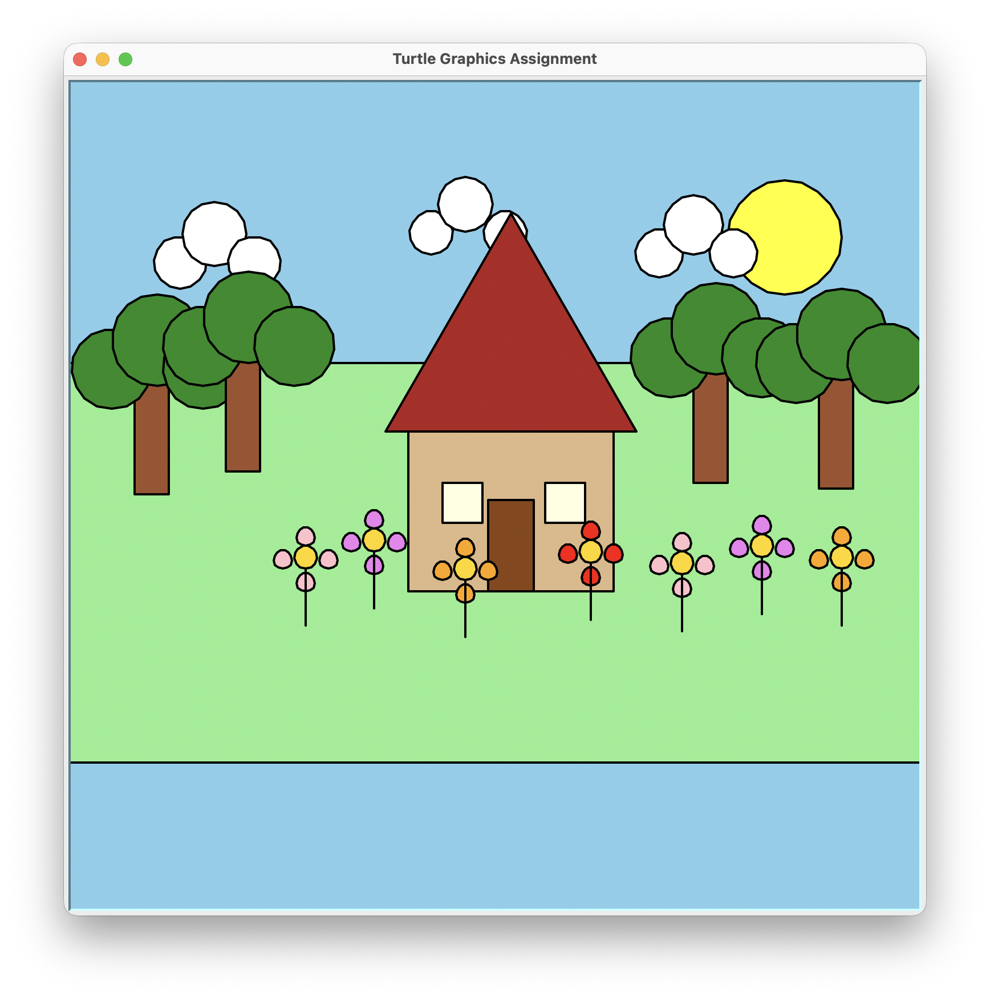

Overview
This project builds on Project 2 by refactoring a large, monolithic
draw_scene() function into smaller, reusable helper functions.
The goal was to improve code organization, reduce repetition, and make it
easy to compose more complex scenes from the same building blocks.

What It Does
- Draws a scene with a sky background, rolling green grass, sun, and clouds
- Renders a house with a roof, door, and windows using geometric shapes
- Places trees made of layered circles and a rectangular trunk
- Adds flowers with colored petals around a gold center
- An enhanced scene reuses all the same functions to add more clouds, trees, and flowers
Key Concepts
- Refactoring: Breaking a large function into small, single-purpose helpers like
draw_house(),draw_tree(),draw_cloud(), anddraw_flower() - Code reuse: The same helper functions are called multiple times with different positions and colors to build both the original and enhanced scenes
- Turtle graphics: Using Python's
turtlemodule to draw shapes by controlling pen movement, fill color, and coordinates - Geometric primitives: Composing complex objects from rectangles, triangles, circles, and polygons
Code Highlights
Reusable helper function
def draw_flower(t, x, y, petal_color):
"""Draw a flower at position (x, y) with a given petal color."""
jump_to(t, x, y)
draw_circle(t, 10, "gold") # center
draw_flower_petals(t, x, y, petal_color)
jump_to(t, x, y)
t.setheading(270)
t.forward(50) # stemEnhanced scene calling the same helpers
def draw_enhanced_scene(t):
draw_background(t)
draw_sun(t, 250, 180)
draw_cloud(t, -280, 185, 28)
draw_cloud(t, -60, 215, 24)
draw_cloud(t, 140, 195, 26)
draw_house(t, -80, 60)
draw_tree(t, -320, 105)
draw_tree(t, 170, 115)
draw_flower(t, 80, -55, "red")
draw_flower(t, 230, -50, "violet")What I Learned
Refactoring taught me that readable code matters as much as working code. Once I had clean helper functions, building the enhanced scene took almost no extra effort. I also got more comfortable thinking in terms of coordinates and how simple geometric shapes combine into recognizable objects.